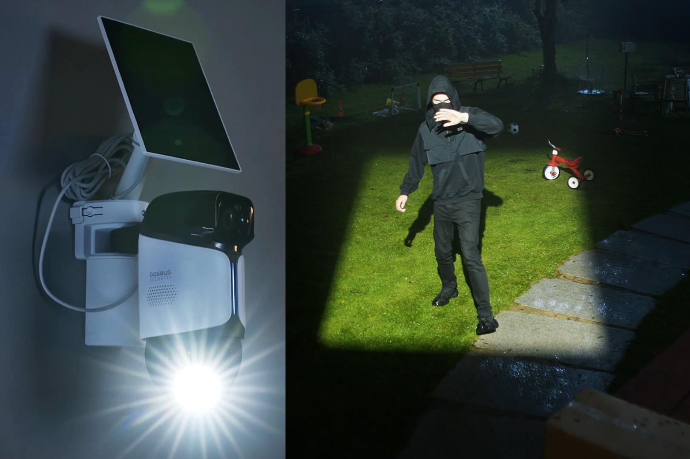

Компания Baseus, известная зарядками и аксессуарами, расширяет линейку умного видеонаблюдения. Новинка — PrimeSentinel U2 Pro Outdoor 3K Dual Camera — анонсирована на IFA 2026 и выходит в продажу в октябре: в Европе с 15 октября по цене 269,99 евро. Главная фишка — «прожектор сфокусрованного устрашения», как его называет сам производитель: мощный направленный луч на моторном подвесе захватывает засечённую цель и сопровождает её в реальном времени, даже если человек бежит через весь участок.
Схема двойная: фиксированный 3K-объектив постоянно следит за одной зоной, а вторая 3K-камера с поворотом на 360° и зумом докрывает остальное. Работает связка двух PIR-датчиков и ИИ-распознавания: система различает людей, лица, машины и животных, присылает осмысленные уведомления с текстовым описанием происходящего и молчит на качающиеся ветки. Распознавание идёт в облаке по подписке. Цветное ночное видение помогает опознать человека или цвет машины нарушителя — а подсвеченная прожектором сцена заметно повышает шансы на это опознание.
Камера создана для круглогодичной жизни на улице: защита IP65, двусторонняя аудиосвязь, локальное хранение на зашифрованной карте памяти на 512 ГБ (запись только по движению) и просмотр через приложение Baseus, Alexa или Google Home. Аккумулятора хватает до 150 дней, а в комплекте идёт солнечная панель на 3 Вт — получаса солнца достаточно на сутки работы. По заявлению Baseus, монтаж на стену или потолок занимает около двух минут.
Идея «активного отпугивания» давно живёт в камерах Ring и Eufy — там ограничиваются сиреной и обычной подсветкой. Baseus делает ставку именно на сопровождающий луч, называя его первым в отрасли. Насколько такая тактика законна в жилых районах — вопрос к местным правилам, но маркетологи явно рассчитывают на вау-эффект.